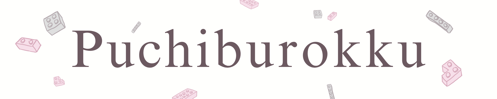

|  |
|
|
|
1
2
3
4
5
6
7
8
9
10
11
12


|
Friends of Dogs & Cats SeriesShiba InuDecember 23rd, 2024, 03:24 pm 
𝅘𝅥𝅮It's beginning to look a lot like christmas~!𝅘𝅥𝅮 Christmas is just around the corner and I don't know what it is with Shiba-type dogs but I'm always reminded of snow and cold hills/mountains. Well anyways, as I was listening to the holiday songs in Daiso, this model caught my eye so I thought it was fitting for me to review it! :D It was quite cheap this time of the year, only RM5 from its usual RM6.99! So if you're gonna buy a lot for gifts, you better buy it now!
The Unboxing: Quality and First ImpressionsThe Shiba Inu kit from the Friends of Dogs & Cats Series came packed with the usual petite blocks jumbled in a transparent plastic bag. The were blocks with warm tones of orange for the coat, white for the underbelly and paws, and black for the facial details. As always, the instruction manual was compact and easy to follow, with clear diagrams that guided me through each step. Watch this relaxing timelapse video below to see me building it!
Instruction ManualDifficulty: ⭐Building the Shiba InuThe build began with the Shiba Inu’s paws and base. These initial steps were straightforward, making it a good entry point for beginners. As I moved on to the body and head, the complexity increased. Aligning the orange and white blocks to mimic the Shiba Inu’s natural coat pattern was easy but a painful one if you did a mistake on one of the steps. Taking out the pieces after you've assembled it is harder than you think. The curled tail was the highlight of the build—it added so much personality to the model and the whole model felt full of integrity, the very opposite of fragile. While building, I had a thought. If you have gray coloured blocks, you could totally build a husky instead of a shiba inu! Honestly, the dog breed possibility are endless as long as you have extra coloured blocks! Building this was honestly so fun, it was quite straightforward and I rarely had any mistakes that I needed to fix. I finished it in about less than 25 mins. Therefore, I'll give it a 1 out of 3 stars in difficulty! My Tips!1. Organize Before Building: Sorting your blocks by color and size saves time and makes following the instructions much easier. 2. Work in Stages: Complete one section (like the paws or tail) before moving to the next. This keeps you focused and reduces the chance of mistakes. 3. Adjust as Needed: Don’t hesitate to backtrack if something feels off. Petite Blocks are all about precision, and the final result is worth the extra effort.
Do you love building Petite Blocks as much as I do? I’d love to hear your thoughts, tips, and experiences! If you’ve tackled the Shiba Inu model—or if you have requests or questions—reach out to me on X at @nikilikespuchiburokku. Let’s keep the Petite Block community growing, one tiny block at a time. . . . If you're in my area and you're interested in buying this model, here's a map to guide you! |